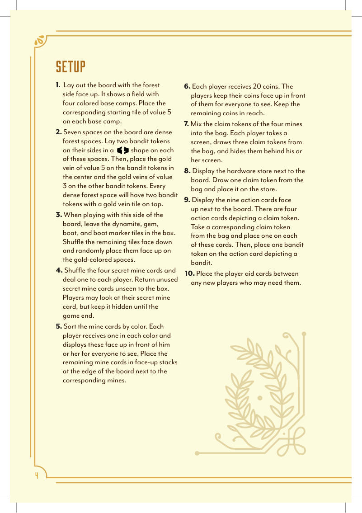
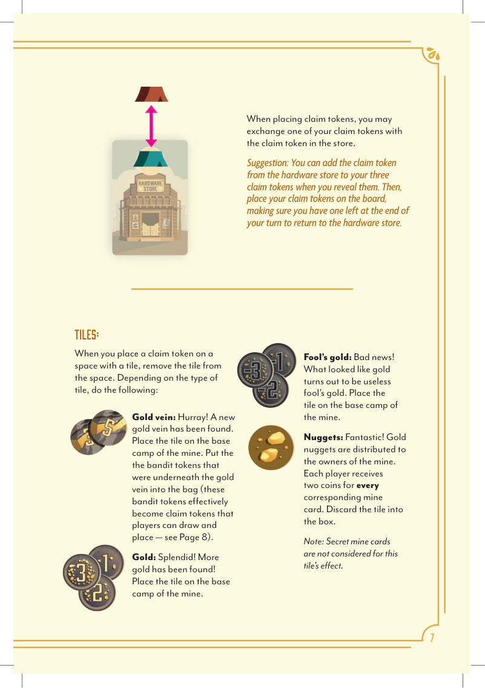
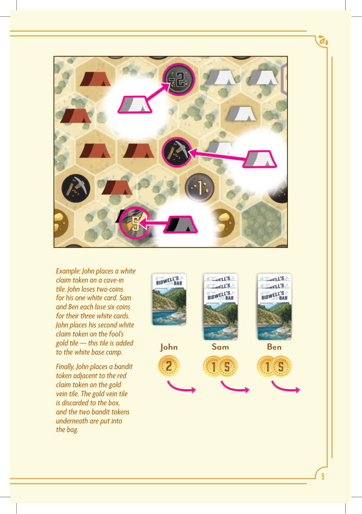
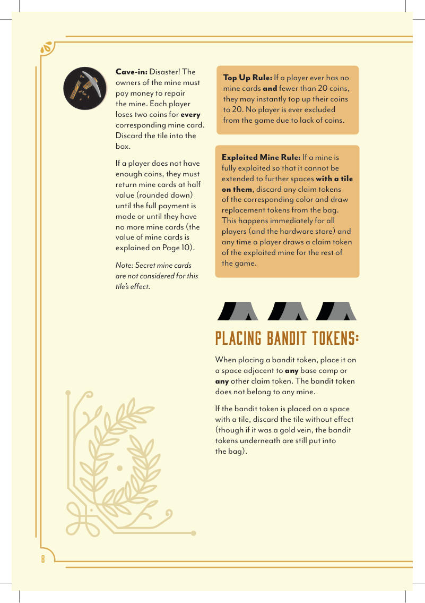
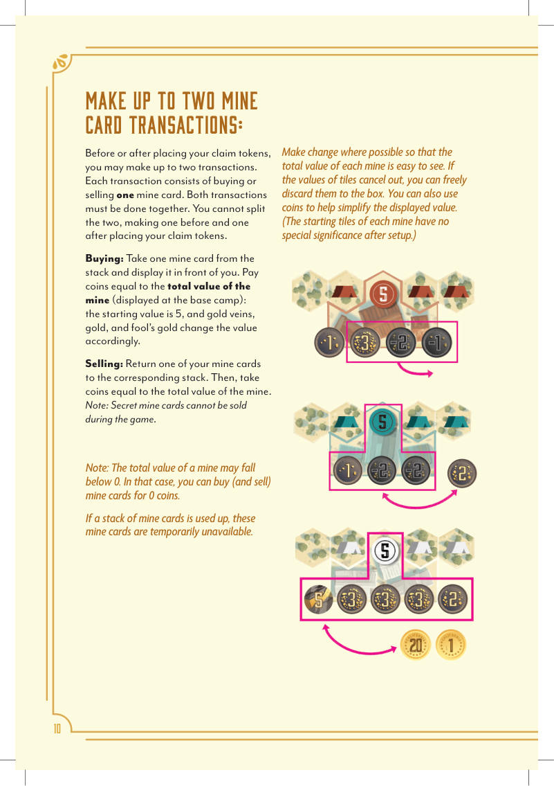
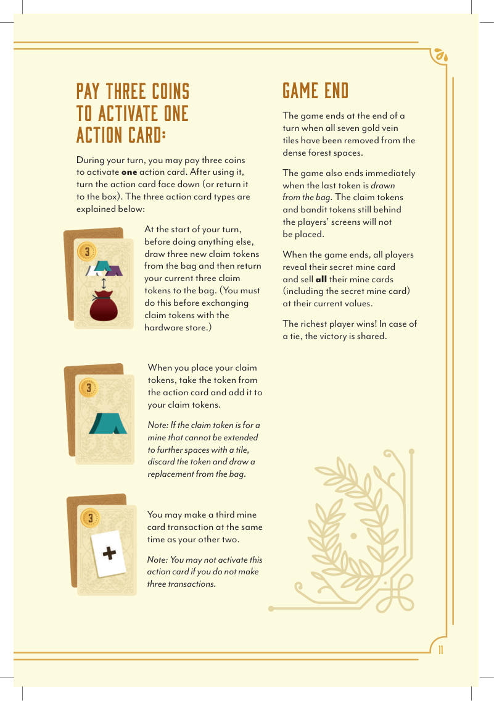
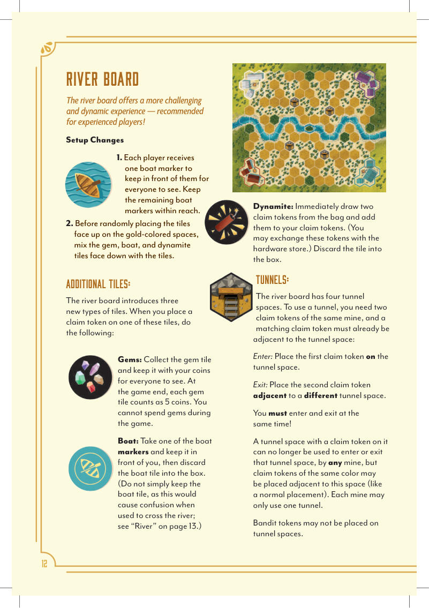
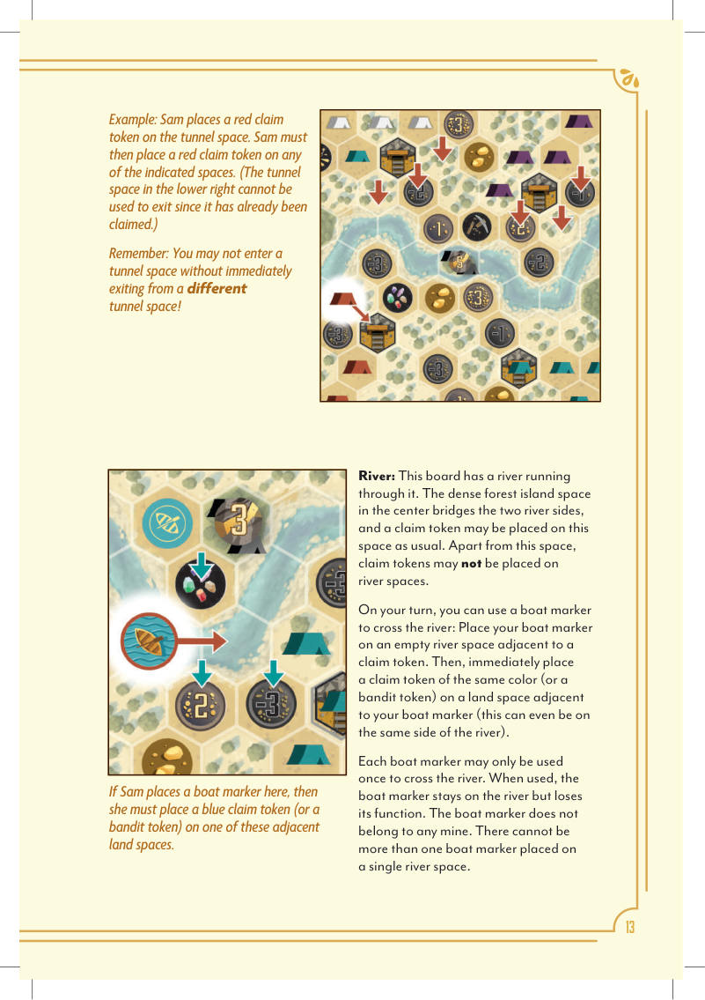

黄金乡
01游戏概览
「找到了！」加州的丘陵与森林里，黄金像无边无际的海水一样流淌；数不清的准淘金客涌向这片肥沃的土地，抢着圈下自己的地盘，发一笔财。
拿起你的镐和淘金盘，勘探这片土地，把本钱投进最富的矿里——最后金子最多的人赢。
- 2–4 人
- 30–60 分钟
- 8 岁以上
《黄金乡》是经典作品《奇观》（Spectaculum）的演化版，在原有骨架上加了强盗标记、更清晰的终局触发、可换取的索取标记、行动卡、秘密矿卡，以及一张更进阶的河流版图。
02配件与名词
游戏围绕「四座矿」展开：红、蓝、黄、白四色各对应一座矿，矿的当前总值由摆在它基地上的一叠板块决定，而玩家手里的矿卡就代表对该矿的一份所有权。
| 配件 | 数量 | 说明 |
|---|---|---|
| 版图 | 双面 | 一面是森林（基础版图），一面是河流（进阶版图） |
| 矿卡 | 四色各一叠 | 代表对某座矿的一份所有权；面值随该矿总值浮动 |
| 秘密矿卡 | 4 张 | 开局每人 1 张，暗置到终局；不计入金块／塌方效果 |
| 索取标记 | 四色 | 用来在版图上延伸矿脉；平时藏在屏风后 |
| 强盗标记 | 若干 | 不属于任何矿，用来堵路和抢走板块 |
| 屏风 | 每人 1 个 | 挡住自己手上的索取标记 |
| 金币 | 每人开局 20 枚 | 正面朝上摆在自己面前，人人可见 |
| 五金店 | 1 个 | 摆一块可被换走的索取标记 |
| 行动卡 | 9 张 | 花 3 枚金币激活其中 1 张，每回合最多 1 张 |
| 板块 | 若干 | 基础版：矿脉、黄金、愚人金、金块、塌方；河流版另加宝石、船、炸药 |
| 矿脉板块 | 7 块 | 压在密林格的强盗标记上：中央 1 块值 5，其余值 3 |
| 船标记 | 河流版每人 1 个 | 用来渡河，只能用一次 |
| 玩家提示卡 | 若干 | 发给需要的新手 |
03设置
- 把版图森林面朝上铺开。版图上是一片原野，有四个彩色的基地。在每个基地上放上对应颜色、数值 5 的起始板块。
- 版图上有7 个密林格。在每个这样的格子上，把两枚强盗标记侧放、摆成一个并排的形状。然后，在中央那两枚强盗标记上放数值 5 的矿脉板块，其余各格放数值 3 的矿脉板块。这样每个密林格上都是：两枚强盗标记 ＋ 一块压在上面的矿脉板块。
- 使用这一面版图时，把炸药、宝石、船、船标记板块留在盒里。其余板块背面朝下洗混，随机正面朝上放到金色格上。
- 把 4 张秘密矿卡洗混，每人发 1 张。没用到的秘密矿卡不看内容直接收回盒里。玩家可以看自己的秘密矿卡，但要暗置到终局。
- 把矿卡按颜色分类。每位玩家每种颜色各拿 1 张，正面朝上摆在自己面前，人人可见。剩下的矿卡按颜色在版图边、对应矿的旁边各叠成一堆，正面朝上。
- 每位玩家拿 20 枚金币，正面朝上摆在自己面前，让所有人都看得见。剩下的金币放在伸手可及处。
- 把四座矿的索取标记混进袋子里。每位玩家拿 1 个屏风，从袋里抽 3 枚索取标记，藏在屏风后面。
- 把五金店摆在版图旁。从袋里抽 1 枚索取标记，放在五金店上。
- 把 9 张行动卡正面朝上摆在版图旁。其中4 张卡上画着索取标记——从袋里抽出对应颜色的索取标记，各放 1 枚在这 4 张卡上。然后，在画着强盗的那张行动卡上放 1 枚强盗标记。
- 把玩家提示卡放在可能需要的新手之间。

04回合流程
最后一位碰过钱的玩家先手（也可以随机决定起始玩家），之后顺时针进行。
轮到你时，先抬起屏风，亮出你的 3 枚索取标记。然后按任意顺序执行以下行动（每个行动都必须全部做完才能进行下一个）：
- 把索取标记放到版图上，延伸矿脉（必做）。可选：用其中一枚与五金店上的那枚交换。
- 进行至多两次矿卡交易（可选）。每次交易是买入或卖出 1 张矿卡。
- 支付 3 枚金币，激活 1 张行动卡（可选）。每张卡只能在你回合中的特定时机激活，见第 07 节。
回合结束时，从袋里重新抽 3 枚索取标记，藏到屏风后面。
这三项行动底下还有细节，下面逐项说明。
05放置索取标记，延伸矿脉
每枚索取标记都会延伸同色的那座矿。把它放到版图上任意一格，条件是这一格与基地相邻，或者与同色的任意一枚索取标记相邻。每格只能有 1 枚索取标记。手上的索取标记必须全部放完。
与五金店交换
放置索取标记时，你可以用其中一枚与五金店上的那枚交换。
格子上有板块时
当你把索取标记放到一个有板块的格子上时，把板块从格子上拿走，然后按板块种类处理：
| 板块 | 效果 |
|---|---|
| 矿脉 | 太好了，发现新矿脉！把这块板块放到该矿的基地上。再把原本压在矿脉下面的强盗标记放回袋里——这些强盗标记从此变成了索取标记，玩家可以抽到并放置（见本节「强盗标记」）。 |
| 黄金 | 漂亮，又找到金子了！把板块放到该矿的基地上。 |
| 愚人金 | 坏消息：看着像金子，其实是没用的愚人金。把板块放到该矿的基地上。 |
| 金块 | 发财了！金块分给这座矿的所有者：每持有 1 张该矿的矿卡，得 2 枚金币。然后把板块弃入盒中。 注意：秘密矿卡不计入这块板块的效果。 |
| 塌方 | 灾难！矿的所有者必须出钱修矿：每持有 1 张该矿的矿卡，失去 2 枚金币。然后把板块弃入盒中。 若某位玩家的金币不够，他必须按半价（向下取整）退回矿卡，直到付清全额、或者手上再没有矿卡为止（矿卡的价值见第 06 节）。 注意：秘密矿卡不计入这块板块的效果。 |

强盗标记
放强盗标记时，把它放到版图上任意一格，条件是这一格与任意基地相邻，或者与任意其他索取标记相邻。强盗标记不属于任何矿。
如果强盗标记落在了有板块的格子上，把板块弃掉且不产生任何效果——不过如果那是矿脉，压在下面的强盗标记仍然要放进袋里。

补币规则
如果某位玩家手上没有任何矿卡，且金币少于 20 枚，他可以立刻把金币补到 20 枚。任何玩家都不会因为缺钱而被踢出游戏。

矿脉挖尽规则
如果某座矿被完全挖尽——也就是再也无法延伸到任何有板块的格子上——就把该色的索取标记全部弃掉，并从袋里抽补新的。这条规则立刻对所有玩家（以及五金店）生效；此后本局中任何人抽到该矿的索取标记，也照此处理。
06矿卡交易
在放置索取标记之前或之后，你可以进行至多两次交易，每次交易是买入或卖出 1 张矿卡。两次交易必须连着做——不能拆开、一次放在标记之前、一次放在之后。
买入
从对应颜色的牌堆取 1 张矿卡，正面朝上摆在自己面前；支付的金币数＝这座矿的总值（印在基地上）：起始值是 5，之后由矿脉、黄金、愚人金板块相应增减。
卖出
把 1 张自己的矿卡退回对应颜色的牌堆，然后拿取金币，数量＝这座矿的总值。
- 秘密矿卡在游戏中不能卖出。
- 一座矿的总值可能降到 0 以下。这种情况下，买卖矿卡都按 0 枚金币算。
如果某色矿卡堆用完了，这些矿卡暂时拿不到。能找零就找零，让每座矿的总值一眼看得出。如果基地上正负板块互相抵消，你可以直接把它们弃入盒中；也可以用金币帮忙把摆出来的数值简化。（各矿的起始板块在设置之后没有特殊意义。）

07行动卡：花 3 枚金币激活 1 张
回合中你可以支付 3 枚金币激活 1 张行动卡。用完之后把这张卡翻到背面朝上（或退回盒里）。三种行动卡如下：
| 卡面 | 效果 | 时机 |
|---|---|---|
| 钱袋 | 从袋里重新抽 3 枚索取标记，然后把当前这 3 枚退回袋里。这一步必须在与五金店交换之前做完。 | 回合最开始，做任何事之前 |
| 帐篷＋标记 | 放置索取标记时，把这张卡上的那枚索取标记也加进你的标记里一起放。 注意：若这枚标记所属的矿已经无法再延伸到有板块的格子，就把它弃掉，另从袋里抽一枚补上。 | 放置索取标记时 |
| 白牌＋十字 | 你可以在原有两次交易的同时，再做第三次矿卡交易。 注意：如果你没有做成三次交易，就不能激活这张卡。 | 与两次交易同一时机 |

08游戏结束与计分
结束条件
- 当 7 块矿脉板块全部从密林格上被取走时，在那一回合结束时游戏结束。
- 当袋里最后一枚标记被抽走时，游戏也立刻结束——此时还留在玩家屏风后的索取标记与强盗标记不再放置。
计分
游戏结束时，所有玩家亮出自己的秘密矿卡，并把手上所有矿卡（包括秘密矿卡）按当前总值卖出换成金币。
最富的玩家获胜。若并列，则共享胜利。
09河流版图（进阶）
河流版图提供更有挑战、更多变化的体验——建议熟练后再玩。
设置变化
- 每位玩家拿 1 个船标记，摆在自己面前让所有人看得见；剩下的船标记放在伸手可及处。
- 在把板块随机正面朝上放到金色格之前，先把宝石、船、炸药板块背面朝下混进板块堆里。
三种新板块
| 板块 | 效果 |
|---|---|
| 宝石 | 把宝石板块收下，和金币一起摆在自己面前，人人可见。终局时每块宝石价值 5 枚金币。游戏中不能花掉宝石。 |
| 船 | 拿 1 个船标记摆在自己面前，然后把船板块弃入盒中。 （不要把船板块留着当凭证，否则渡河时会混淆——见本节「河流」。） |
| 炸药 | 立刻从袋里抽 2 枚索取标记，加进你的标记里（这些标记也可以和五金店交换）。然后把板块弃入盒中。 |
隧道
河流版图上有4 个隧道格。要使用隧道，你需要同一座矿的两枚索取标记，并且该色的一枚索取标记已经与这个隧道格相邻：
- 进：把第一枚索取标记放到隧道格上；
- 出：把第二枚放到另一个隧道格的相邻格。
进和出必须同时完成！
已经有索取标记的隧道格，此后任何矿都不能再用它进出；但同色的索取标记仍然可以放在这个格子的相邻格（当作普通放置）。每座矿只能用一条隧道。
强盗标记不能放在隧道格上。
河流与渡河
这张版图中间有一条河。中央的密林岛格横跨两岸，这一格可以照常放索取标记；除此格之外，河流格上不能放索取标记。
轮到你的回合，你可以用一个船标记渡河：把船标记放在一个空的河流格上，条件是这一格与一枚索取标记相邻。然后立刻把一枚同色的索取标记（也可以是强盗标记）放到与你船标记相邻的陆地格上——甚至可以是河的同一侧。
每个船标记只能用一次渡河。用过之后，船标记留在河上，但失去作用。船标记不属于任何矿。同一个河流格上不能放超过一个船标记。


10出版人手记（节译）
《黄金乡》的诞生过程，和我们与 Reiner Knizia 合作的其他 Crown Jewel 系列都不一样。前五款都是我翻他的旧目录、挖到一颗蒙尘的宝石，再带着改造想法去找他。这一款反过来——是 Reiner 的团队先找上我，带来一款股票操纵游戏的新版，原名《奇观》（Spectaculum）。
我早就知道《奇观》。几年前刚玩过几局时我写过：「设计扎实，不愧是大师手笔。但它过于战术化、过于细碎、过于程序化，也过于干。而且到了后期容易泄气——某个颜色已经接不上任何板块，玩家却还在从袋里抽那些废色……」
尽管我对它评价平平，这个提案还是立刻抓住了我：一是主题从「巡回马戏团」换成了更贴题的淘金热；二是 Reiner 重画了地图、换了更好的终局触发，还发明了阴险的强盗标记。让我好奇的是，他是在没人推动的情况下，自己回头改这款设计的。
玩过这个当时叫《California 1849》的新版本之后，它成了那批约十个原型里我们最喜欢的一个。强盗标记尤其出彩——它给游戏的第三幕带来了意外和戏剧性。
后来我们又带着意见回去找他，特别希望做一面更进阶的版图背面。Reiner 愿意继续开发，结果就是现在这个样子。《黄金乡》的改动包括：
- 用不断进入袋子和玩家手上的强盗标记强化游戏弧线
- 改进终局触发，重画地图，把张力拉满
- 加入与五金店交换索取标记、激活行动卡，拓宽战术弹性
- 用秘密矿卡藏起一部分玩家得分
- 新增一张河流版图，带来新标记、新格位和更多战略选择
- 换上 Beth Sobel 绘制的淘金热主题，让游戏更亲民、更好上手
——Nick Murray，Bitewing Games
A中英术语对照
| English | 中文 | 说明 |
|---|---|---|
| claim token | 索取标记 | 延伸矿脉用的四色标记，平时藏在屏风后 |
| base camp | 基地 | 版图上的四个彩色据点 |
| mine card | 矿卡 | 一份矿权，价格＝该矿总值 |
| secret mine card | 秘密矿卡 | 暗置到终局，不吃金块／塌方 |
| gold vein | 矿脉 | 压在密林格强盗标记上的板块 |
| fool's gold | 愚人金 | |
| nuggets | 金块 | 按矿卡发钱 |
| cave-in | 塌方 | 按矿卡扣钱 |
| bandit token | 强盗标记 | 不属于任何矿，堵路并抢板块 |
| hardware store | 五金店 | 存放可交换的一枚索取标记 |
| dense forest space | 密林格 | 共 7 个 |
| gold-colored space | 金色格 | 摆放随机板块的位置 |
| exploited mine | 矿脉挖尽 | 无法再延伸到有板块的格子 |
| top up | 补币 | 无矿卡且不足 20 枚时补到 20 |
| tunnel | 隧道 | 河流版图共 4 个 |
B制作名单
设计：Reiner Knizia｜美术：Beth Sobel｜平面设计：Alisha Giroux｜编辑：Scott Darrington｜出版：Nick Murray、Kyle Spackman（Bitewing Games）
Reiner Knizia 感谢所有参与《黄金乡》开发的淘金者，特别是 Iain Adams、Sebastian Bleasdale、Chris Bowyer、Chris Dearlove、Drak、Gavin Hamilton、Ross Inglis、Kevin Jacklin、Simon Kane、Chris Lawson、Dave Spring、Peter Wimmer。
© Dr. Reiner Knizia, 2026｜© Bitewing Games LLC, 2026｜www.bitewinggames.com